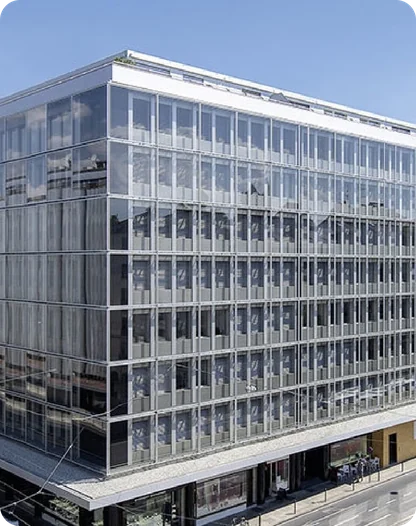
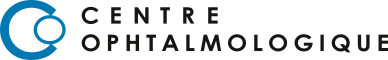
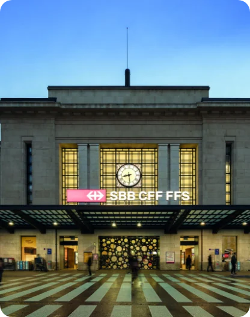
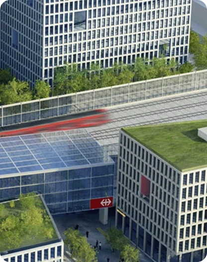
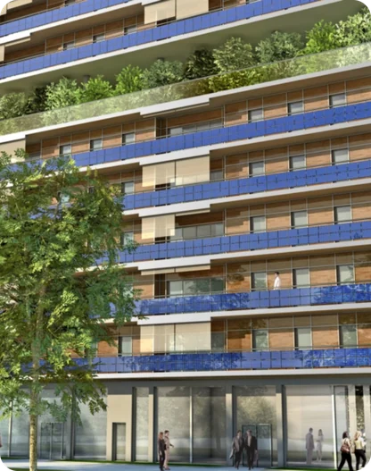
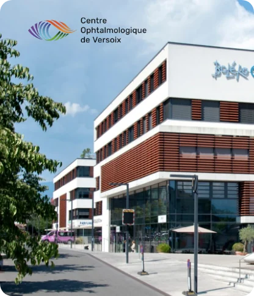
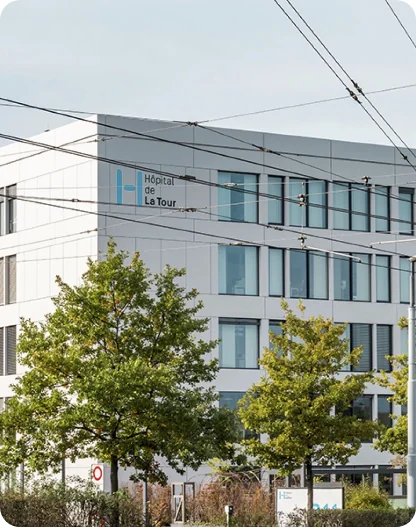

Rive
Rue Pierre-Fatio 151204 Genève
Lundi – vendredi, 8 h – 18 h. Le créneau 18 h – 19 h est réservé aux urgences.

37 ophtalmologues, orthoptistes et optométristes prennent soin de vos yeux, avec l’infrastructure nécessaire au diagnostic et au traitement médico-chirurgical d’un grand nombre de pathologies oculaires.
Au Centre de Rive, du lundi au vendredi de 8 h à 19 h (18 h en juillet et août), et le samedi de 9 h à 13 h. Rue Pierre-Fatio 15, 1204 Genève.
Permanence téléphonique 24 h sur 24, 7 jours sur 7.
022 959 75 65Pour un rendez-vous avec un médecin qui n’est pas listé en ligne, appelez le centre concerné.

Lundi – vendredi, 8 h – 18 h. Le créneau 18 h – 19 h est réservé aux urgences.

Lundi – vendredi, 8 h – 18 h.

Lundi – vendredi, 8 h – 17 h.

Lundi – vendredi, 8 h – 17 h.

Lundi – vendredi, 8 h – 17 h.

Fermeture provisoire. Rendez-vous au Centre de Meyrin-Vergers, à 100 m (tram 18, arrêt Hôpital de La Tour).
Yeux secs, fatigués, rouges ou irrités ? Ce sont des symptômes très fréquents, dont la cause est souvent liée à un problème de larmes et de paupières.
Le traitement IPL (Intense Pulsed Light) utilise une lumière pulsée intense, adaptée aux paupières. Il est proposé au Centre de Rive, au 6e étage.
Rendez-vous : du lundi au vendredi, 9 h – 18 h (sauf le mercredi), au 022 959 75 75 ou 022 959 75 21.
Des vidéos d’information présentent les pathologies rencontrées et nos interventions :
Les six centres réunissent 37 ophtalmologues, orthoptistes et optométristes. Les centres sont certifiés « établissements de formation postgraduée ».